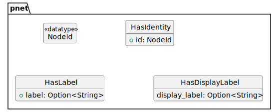
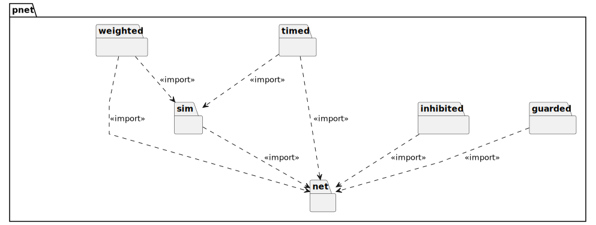
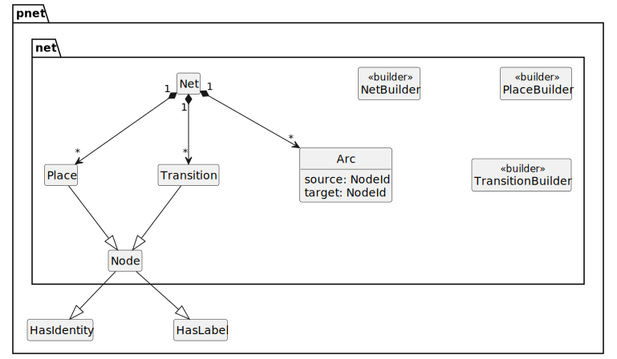
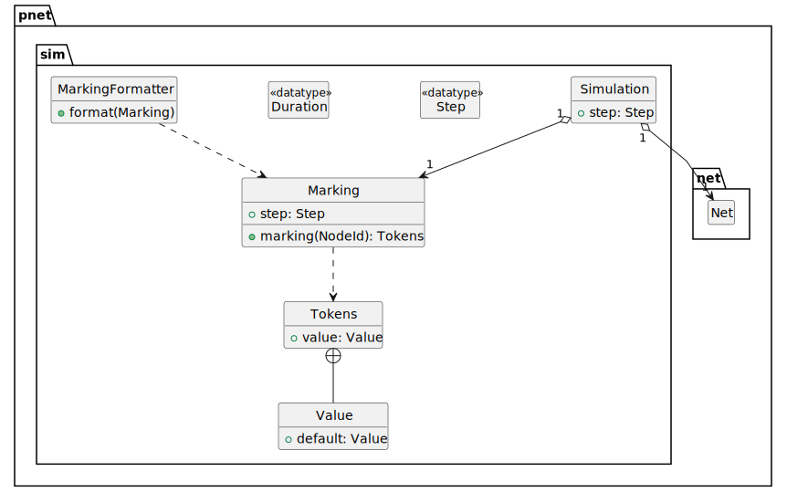
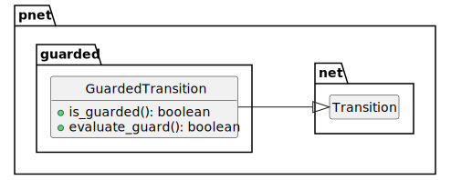
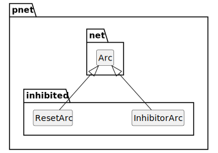
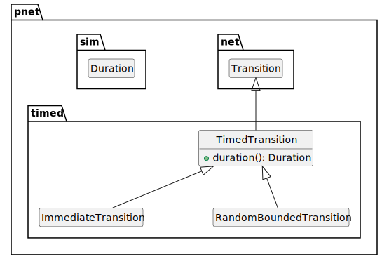
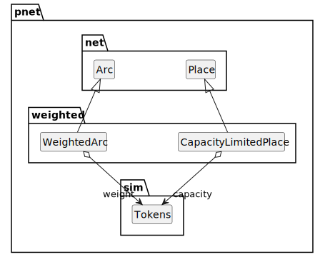
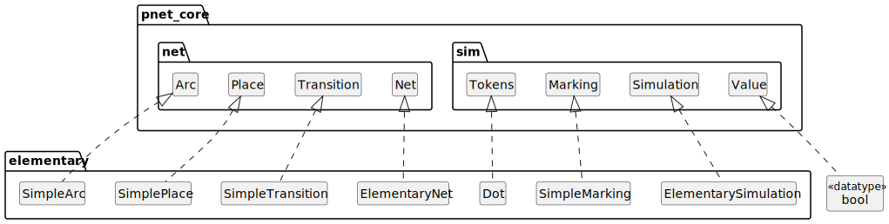

Notes on Petri Nets
Table of Contents
Figure 1: Basic Petri Net Components
net net0 {
place p1, p2
transition t1
arc p1 -> t1 -> p2
}
1. PTNet Core

Figure 2: Core Interfaces

Figure 3: Core Modules
1.1. Net Core Module

Figure 4: Sim Net Module
1.2. Sim Core Module

Figure 5: Sim Core Module
1.3. Guarded Extension Module

Figure 6: Guarded Extension Module
1.4. Inhibited Extension Module

Figure 7: Inhibited Extension Module
1.5. Timed Extension Module

Figure 8: Timed Extension Module
1.6. Weighted Extension Module

Figure 9: Weighted Extension Module
2. Elementary Nets

Figure 10: Elementary Net Module
3. Appendix: PTNet Language
PTNet is a source form that allows for compact representation of nets in a readable form.
3.1. PTNet Grammar
TBD
4. Appendix: GraphViz
4.1. Net
strict digraph {
id="{id}";
bgcolor="transparent";
compound=true;
fontname="Helvetica Neue,Helvetica,Arial,sans-serif";
nodesep={seperation};
rankdir={rankdir};
ranksep{seperation};
}
| Parameter | Description | Default |
|---|---|---|
id |
use the prefix string “net” followed by a unique identifier (integer) | “net0” |
seperation |
determine node/rank spacing | 0.75 |
rankdir |
this is best as either “TD” for top-down, or “LR” for left-to-right | “LR” |
4.2. Place
strict digraph {
{id} [
id="{id}";
shape="circle";
height={size};
width={size};
label="{marking}";
xlabel="{label}";
];
}
| Parameter | Description | Default |
|---|---|---|
id |
use the prefix string “p” followed by a unique identifier (integer) | “p0” |
size |
in this case the diameter of the place circle | 0.5 |
marking |
a string representation of the marking of this place | “” |
label |
a user-defined label string, or the value of id |
{id} |
4.3. Transition
strict digraph {
{id} [
id="{id}";
shape="rectangle";
style="filled";
color="{line_color}";
fillcolor="{fill_color}";
height={size};
width={=size*0.2};
label="";
xlabel="{label}";
];
}
| Parameter | Description | Default |
|---|---|---|
id |
use the prefix string “t” followed by a unique identifier (integer) | “t0” |
line_color |
the color of the border of the transition | “black” |
fill_color |
the color of the inside of the transition | “darkgrey” |
size |
in this case the height of the transition, its width is 20% of the height | 0.5 |
label |
a user-defined label string, or the value of id |
{id} |
4.4. Arc
strict digraph {
{source} -> {target} [
id="{source}_{target}";
arrowhead="{arc_head}";
arrowsize={scale}
label="{display_label}";
];
}
| Parameter | Description | Default |
|---|---|---|
source |
the id of the arc source |
N/A |
target |
the id of the arc target |
N/A |
arc_head |
the arrow head shape, different for different arc types | “normal” |
scale |
a scaling factor for the arrow shape | 1.0 |
display_label |
a display label for the arc | “” |
For normal arcs the arc_head is “normal” which is a filled triangular head; for inhibitor arcs it is an open circle “odot”, for
a reset arc it is two filled triangles “normalnormal” (like a fast-forward symbol) and a scale factor of 0.66.
4.5. Sub-net
strict digraph {
subgraph cluster_{id} {
label="{id}";
margin={margin};
}
}
| Parameter | Description | Default |
|---|---|---|
id |
use the prefix string “net” followed by a unique identifier (integer) | “net1” |
label |
a user-defined label string, or the value of id |
{id} |
margin |
the margin in px between the cluster boundary and the included elements | 24 |
4.6. Colors
| Object | State | Border | Fill |
|---|---|---|---|
| Place | Static | “black” | N/A |
| Transition | Static | “black” | “darkgrey” |
| Transition | Dynamic, Enabled | “darkgreen” | “lightgreen” |
| Transition | Dynamic, Not Enabled | “darkgrey” | “lightgrey” |
| Arc | Static | “black” | N/A |